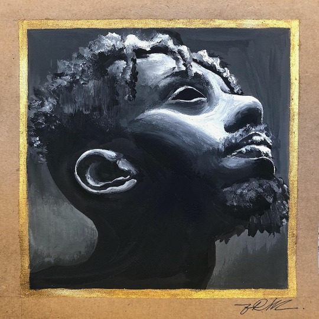

|  | A logo acima é uma reprodução da capa do meu disco preferido, obra do rapper Abebe Bikila, esse disco ganhou o premio de melhor disco do ano de 2016. BK(Abebe bikila) ja foi videomaker e depois resolveu lançar seu trabalho com o grupo Piramide Perdida pois já tinha algumas de suas musicas escritas, depois do lançamento de CASTELOS & RUINAS BK(Abebe Bikila) se firmou no senário e hoje é um dos maiores artistas do Brail e muito respeitado em seu gênero musical. (Abebe Bikila foi um marotinista etíope e foi o primeiro homem a vencer duas maratonas olimpicas seguidas, Abebe corria de descalço o pai do artista se inpirou no corredor) e deu a ele esse nome, como todos erravam o nome do artista abreviou o nome para (BK). Esse album me impcatou muito na época pois mudou a forma que enchergava algumas coisas da vida e com certeza é uma dose do combustivel que me fez aceitar esse desafio de fazer parte da Tcs. |